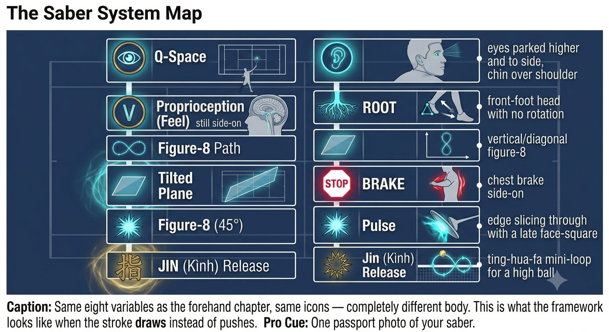
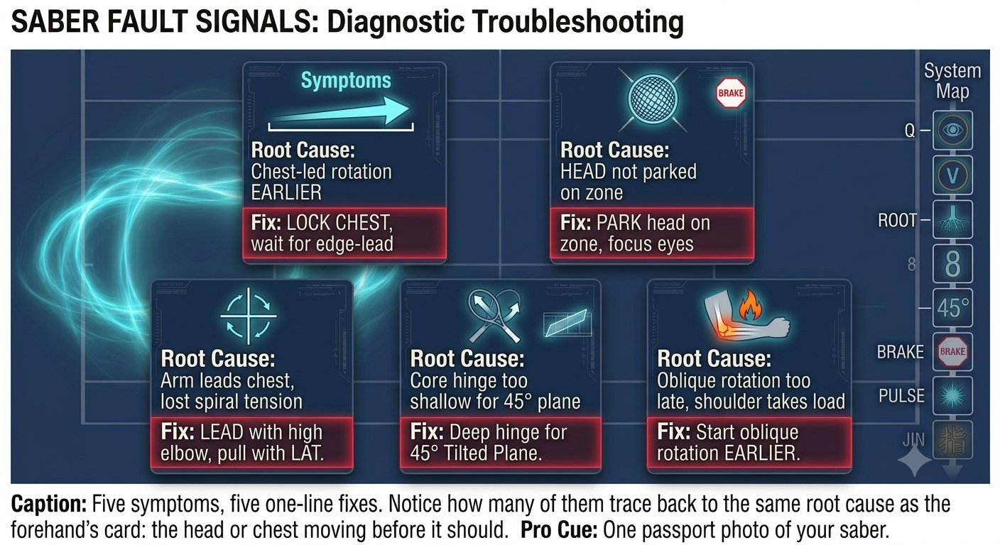
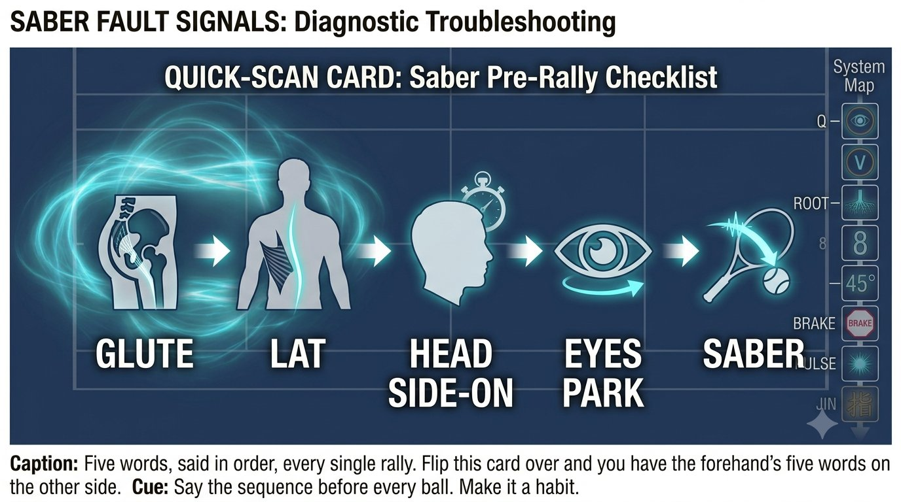

Chapter 20: One-Handed Backhand Saber
(English version of Chapter 20 in the United Tennis Handbook)
CHAPTER 20

Figure 1
ONE-HANDED BACKHAND SABER
Complete Breakdown
The saber draw: high elbow, edge leads, a slice down behind the ball, the face squares late.
The backhand isn't a swing. It's a saber draw from the shoulder sheath. The edge leads, and the face squares at the very last instant.
— Henry Pham
The Saber System Map
The saber system is simply the one-handed backhand's embodiment of Q-V-ROOT-8-45-Impulse-Jin.
Figure 20.1: Same eight variables as the forehand chapter, same icons — completely different body. This is what the framework looks like when the stroke draws instead of pushes.

Figure 2
Load Phase: As the Ball Leaves the Opponent
– Eyes: soft tracking, head moving, VOR on.
– Feet: the front foot steps slightly across, the back hip loads. Feel the glute and lat stretch on the hitting side.
– Body: the shoulder turn runs bigger than on the forehand. The non-dominant hand, at the throat of the racket, pulls it back — you feel a stretch running from hip to lat to elbow. The elbow stays high, above the shoulder.
– Racket: the edge leads, never the face. The face closes slightly, pointing toward the back fence.
Coach's Note
The saber backhand loves a high ball. The forehand hates it. Your edge-leading high takeback is exactly the solution for high balls — you start above the ball and slice downward.
Park Phase: at the Bounce
– Head: stops, but stays side-on. Chin over the front shoulder — don't turn the chin toward the net yet. This keeps the vestibular system quiet and keeps the back line loaded.
– Eyes: jump ahead to the contact zone — further to the side and higher than on the forehand, in front of the front foot. Lock. Say "park."
– Proprioception check: without looking, can you feel the pinky-side edge of the hand leading, the lat stretched long? It should feel like holding a saber above the shoulder.
Execution: the Saber Draw
– Fascial recoil: the hips start forward, but the racket still travels slightly back — this counter-movement loads elastic energy. Then the lat pulls the elbow down and forward, like drawing a sword out of a shoulder sheath at a 45-degree angle.
– Feel: the edge slices down behind the ball, then the face squares at the very last instant — high to low to high. You slice down in order to clear the net with topspin.
– Tension: the upper back stays firm at 5/10, the hand at 3/10 until contact, then up to 6/10. The wrist stays in a firm extension, never floppy.
– Face: an eastern backhand grip runs vertical to slightly closed at this side-on contact point. Exactly right.
– Brake: the chest stays side-on — never let it open toward the net. Braking the chest is what makes the saber snap.
Coach's Note
The saber draw needs a stable high elbow. Drop the elbow and you lose the lat stretch. Think: elbow high, racket head back, edge leading — like drawing a sword from a sheath on your shoulder.
Hold Phase: After Contact
– Eyes and head: still side-on. You should see the contact zone, not the opponent. The chin stays over the shoulder until the ball crosses the net.
– Finish: the racket finishes high, the elbow high, the chest still sideways. Finish facing the net and the head moved early — you lost the back line.
Figure 20.2: Four frames, one draw. The elbow stays high in every single one — the moment it drops in any frame, the lat stretch behind it is already gone.

Figure 3
Fault Signals: What Went Wrong
Figure 20.3: Five symptoms, five one-line fixes. Notice how many of them trace back to the same root cause as the forehand's card: the head or chest moving before it should.

Figure 4
Pre-Point Reset: Five Seconds (Saber Version)
1. Feet to ground: the front foot steps slightly across, feel the outside edge grip. The back foot roots on its outside edge. Feel the stretch between the feet.
2. Head to side-on: chin over the front shoulder. One slow head turn left and right. Feel the vestibular system settle.
3. Hands to 3/10: squeeze the racket to 8/10, then drop to 3/10. Wiggle the fingers. Keep the forearm soft.
The Saber Quick-Scan Card
Say it in order before every rally:
Figure 20.4: Five words, said in order, every single rally. Flip this card over and you have the forehand's five words on the other side.
GLUTE, LAT, HEAD SIDE-ON, EYES PARK, SABER
The Principle
The saber isn't a swing. It's a draw from the shoulder. The edge leads, the face squares last. High elbow, edge leading, the drop, then a slice down in order to go up.
The Saber Checklist
GLUTE. LAT. HEAD SIDE-ON. EYES PARK. SABER.
– Pre-point: glute and lat stretch, head side-on, hands at 3/10.
– Load: the front foot steps across, the back hip loads, the non-dominant hand pulls the racket back — feel the hip-to-lat stretch.
– Park: the head stops side-on, chin over the front shoulder. Eyes jump to the contact zone 30cm in front and to the side, say "park."
– Execute: the hips start forward, the racket still goes back — the counter-movement loads elastic energy. The lat pulls the elbow down, and the edge slices down behind the ball.
– Hold: the eyes and head stay side-on. See the contact zone, not the opponent. Chin over the shoulder until the ball crosses the net.
– A wrist flick or a shoulder shrug means the lat connection was lost and the hand took over. Reset: elbow high.
Where This Leads
This chapter integrates Q-V-ROOT-8-45-Impulse-Jin into the one-handed backhand saber system. Chapter 21 covers the two-handed backhand hybrid. Chapter 22 covers the serve. Chapter 23 covers the return of serve.